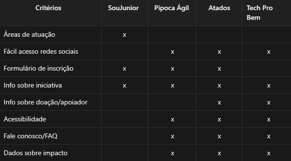
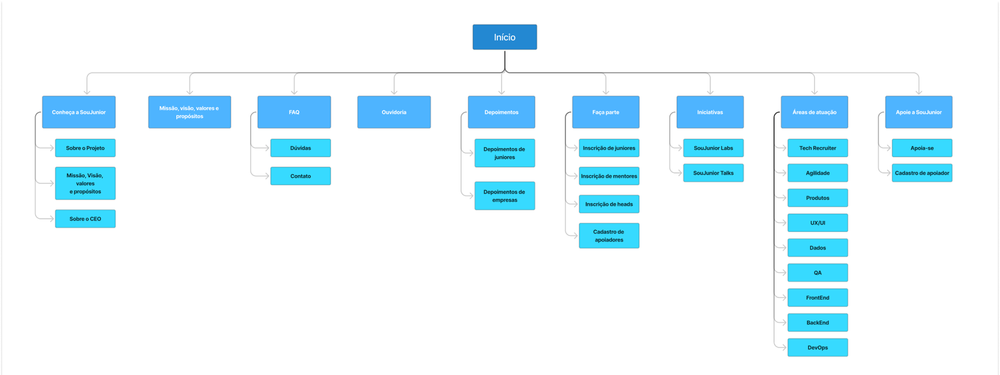

Redesign SouJunior
Projeto de UX/UI Design.
 Contexto
Contexto
A SouJunior é uma iniciativa sem fins lucrativos com uma missão clara: capacitar profissionais em início de carreira através de experiências práticas reais no mercado de tecnologia. O projeto serve como uma ponte entre o aprendizado teórico e a primeira oportunidade profissional.
Apesar de sua proposta de valor inestimável, a iniciativa enfrentava barreiras digitais críticas. O site, que deveria ser a porta de entrada, apresentava:
 Formulários de inscrição não funcionais, bloqueando a entrada de novos voluntários.
Formulários de inscrição não funcionais, bloqueando a entrada de novos voluntários.
 Layout poluído com excesso de anúncios não estratégicos, prejudicando a credibilidade.
Layout poluído com excesso de anúncios não estratégicos, prejudicando a credibilidade.
 Baixa usabilidade e responsividade, dificultando a navegação em dispositivos móveis.
Baixa usabilidade e responsividade, dificultando a navegação em dispositivos móveis.
 Dificuldade na hierarquia da informação, tornando a missão do projeto pouco visível.
Dificuldade na hierarquia da informação, tornando a missão do projeto pouco visível.
Meu papel
UX/UI Designer
Atuei em todo o ciclo de vida do produto, desde a pesquisa e descoberta (Desk Research, Matriz CSD) até a prototipagem de alta fidelidade e testes. Fui responsável por traduzir as necessidades do negócio e as dores dos usuários em uma interface funcional e acessível.
Objetivo
O objetivo principal deste projeto foi reestruturar a experiência digital da SouJunior para eliminar barreiras de entrada. As metas específicas incluíram:
 Otimizar a conversão: Tornar os formulários de inscrição funcionais e fáceis de serem preenchidos.
Otimizar a conversão: Tornar os formulários de inscrição funcionais e fáceis de serem preenchidos.
 Melhorar a retenção: Criar um ambiente organizado que transmita profissionalismo e confiança.
Melhorar a retenção: Criar um ambiente organizado que transmita profissionalismo e confiança.
 Acessibilidade e Responsividade: Garantir que o site seja acessível em qualquer dispositivo, por qualquer pessoa.
Acessibilidade e Responsividade: Garantir que o site seja acessível em qualquer dispositivo, por qualquer pessoa.
 Organização Visual: Reposicionar anúncios e limpar a interface para destacar a proposta de valor.
Organização Visual: Reposicionar anúncios e limpar a interface para destacar a proposta de valor.
Pesquisas e descobertas
Para garantir que o redesign do site da SouJunior resolvesse problemas reais, adotei uma abordagem mista de pesquisa. Combinei a análise de dados de mercado (desk research) com a escuta ativa dos usuários atuais (entrevistas qualitativas). O objetivo foi cruzar tendências de voluntariado em tecnologia com a realidade dura de quem tentava utilizar a plataforma atual.
Matriz CSD
Iniciei organizando o conhecimento da equipe para focar os esforços de pesquisa:

Entrevista com usuários
Para validar nossas suposições, realizei entrevista com usuários e o cenário encontrado foi:
 Percepção negativa de exploração: Os usuários relataram uma sensação de desorientação e frustração ao tentar navegar pelo site. A arquitetura de informação confusa fazia com que eles se sentissem "perdidos", sem conseguir encontrar informações básicas sobre como o projeto funcionava.
Percepção negativa de exploração: Os usuários relataram uma sensação de desorientação e frustração ao tentar navegar pelo site. A arquitetura de informação confusa fazia com que eles se sentissem "perdidos", sem conseguir encontrar informações básicas sobre como o projeto funcionava.
 Fricção crítica no uso: Houve relatos consistentes de desistência motivada por falhas funcionais. A experiência foi descrita como "travada" e "pouco intuitiva" devido ao excesso de anúncios, especialmente no momento crucial da inscrição.
Fricção crítica no uso: Houve relatos consistentes de desistência motivada por falhas funcionais. A experiência foi descrita como "travada" e "pouco intuitiva" devido ao excesso de anúncios, especialmente no momento crucial da inscrição.
 Sentimento de desconfiançaA dificuldade de uso, somada ao visual poluído, gerou uma percepção de amadorismo. Alguns usuários questionaram a seriedade da organização apenas baseando-se na experiência ruim do site.
Sentimento de desconfiançaA dificuldade de uso, somada ao visual poluído, gerou uma percepção de amadorismo. Alguns usuários questionaram a seriedade da organização apenas baseando-se na experiência ruim do site.
Desk Research
Paralelamente, busquei dados em fontes como NNGroup, Idis e pesquisas sobre Voluntariado em TI para entender o que o mercado espera.
 O Voluntariado como carreira: O público busca "aprendizagem informal". Eles querem trocar tempo por experiência de mercado (hard e soft skills). O voluntariado é visto pelos usuários como uma forma de “aprendizagem informal” que fornece a experiência prática e o conhecimento que são exigidos no mercado de trabalho.
O Voluntariado como carreira: O público busca "aprendizagem informal". Eles querem trocar tempo por experiência de mercado (hard e soft skills). O voluntariado é visto pelos usuários como uma forma de “aprendizagem informal” que fornece a experiência prática e o conhecimento que são exigidos no mercado de trabalho.
 Credibilidade visual: Estudos confirmam o "Efeito Estética-Usabilidade": usuários tendem a abandonar sites que parecem desorganizados ou inseguros nos primeiros segundos.
Credibilidade visual: Estudos confirmam o "Efeito Estética-Usabilidade": usuários tendem a abandonar sites que parecem desorganizados ou inseguros nos primeiros segundos.
 Dominância mobile: O engajamento em dispositivos móveis é até 4x maior, tornando a falta de responsividade do site atual um erro estratégico grave.
Dominância mobile: O engajamento em dispositivos móveis é até 4x maior, tornando a falta de responsividade do site atual um erro estratégico grave.
 Processos de inscrição longos: Um processo seletivo longo e formulários mal otimizados podem ser fatores de desistência, até mesmo em projetos voluntários.
Processos de inscrição longos: Um processo seletivo longo e formulários mal otimizados podem ser fatores de desistência, até mesmo em projetos voluntários.
Para analisar o mercado de projetos voluntariados na área de tecnologia e planejar uma solução estratégica, foram avaliados dois concorrentes diretos e um indireto:

Insights
Ao cruzar a Desk Research com as Entrevistas, chegamos a conclusões definitivas que nortearam o projeto:
 Enquanto o mercado exige credibilidade visual, as entrevistas confirmaram que o layout atual estava ativamente afugentando voluntários devido à poluição visual e excesso de anúncios.
Enquanto o mercado exige credibilidade visual, as entrevistas confirmaram que o layout atual estava ativamente afugentando voluntários devido à poluição visual e excesso de anúncios.
 A motivação para o desenvolvimento profissional existe mas é bloqueada pela incapacidade técnica do site em processar inscrições.
A motivação para o desenvolvimento profissional existe mas é bloqueada pela incapacidade técnica do site em processar inscrições.
 O usuário não quer "caçar" informações. A exploração do site precisa ser fluida para que a proposta de valor seja compreendida imediatamente.
O usuário não quer "caçar" informações. A exploração do site precisa ser fluida para que a proposta de valor seja compreendida imediatamente.
Oportunidades mapeadas
Com base nesse diagnóstico profundo, definimos as prioridades do redesign:
 Eliminar a sensação de desorientação criando fluxos claros e hierarquia de informação.
Eliminar a sensação de desorientação criando fluxos claros e hierarquia de informação.
 Limpar a interface visualmente para transmitir o profissionalismo que a SouJunior possui.
Limpar a interface visualmente para transmitir o profissionalismo que a SouJunior possui.
 Transformar o formulário de inscrição na funcionalidade mais acessível e robusta do site.
Transformar o formulário de inscrição na funcionalidade mais acessível e robusta do site.
 Garantir que a experiência seja positiva independente do dispositivo ou limitações do usuário.
Garantir que a experiência seja positiva independente do dispositivo ou limitações do usuário.
Hipóteses
Com base nas descobertas, formulamos as seguintes hipóteses para o redesign:

Fluxos
Foi desenvolvido um Sitemap para reorganizar a arquitetura da informação.
